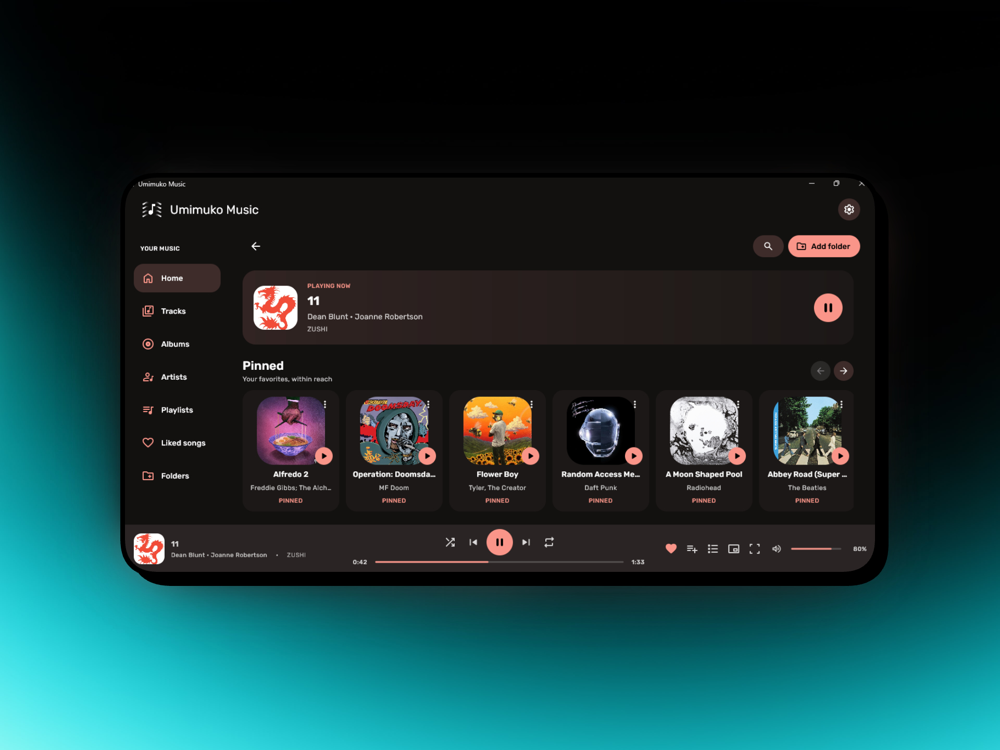
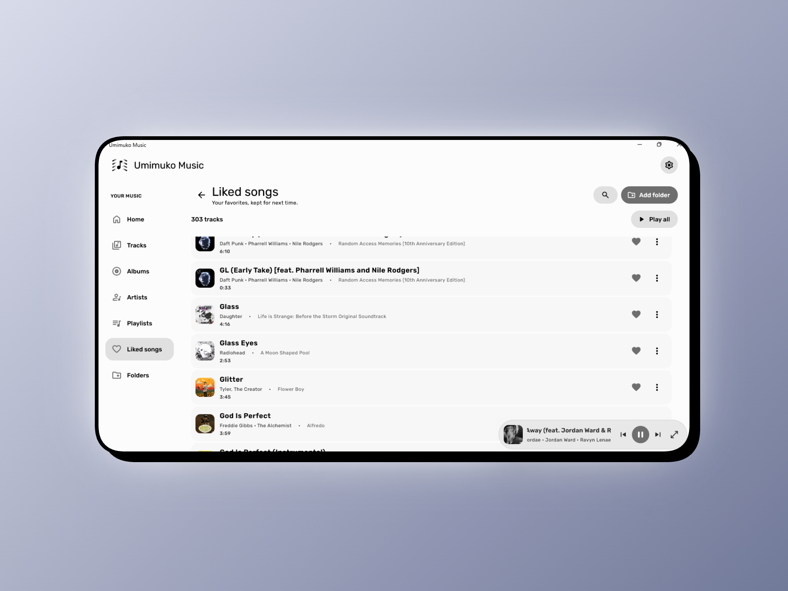
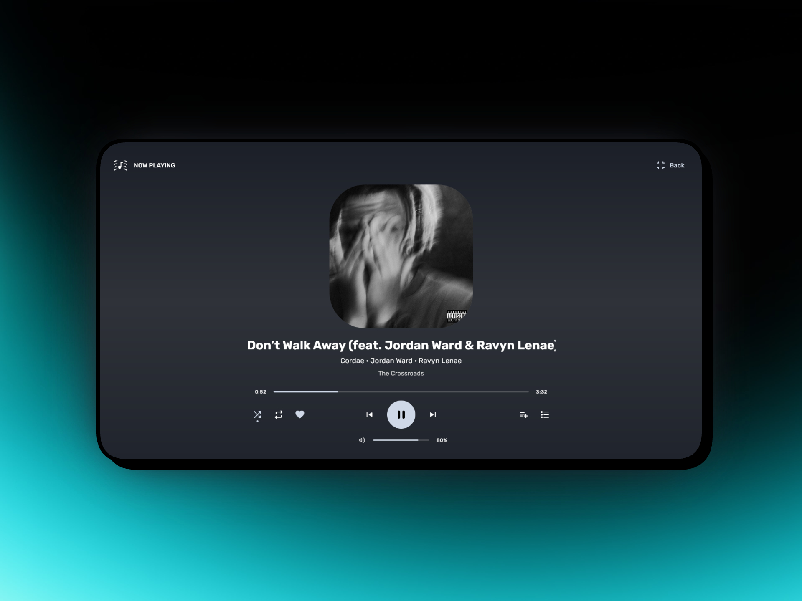
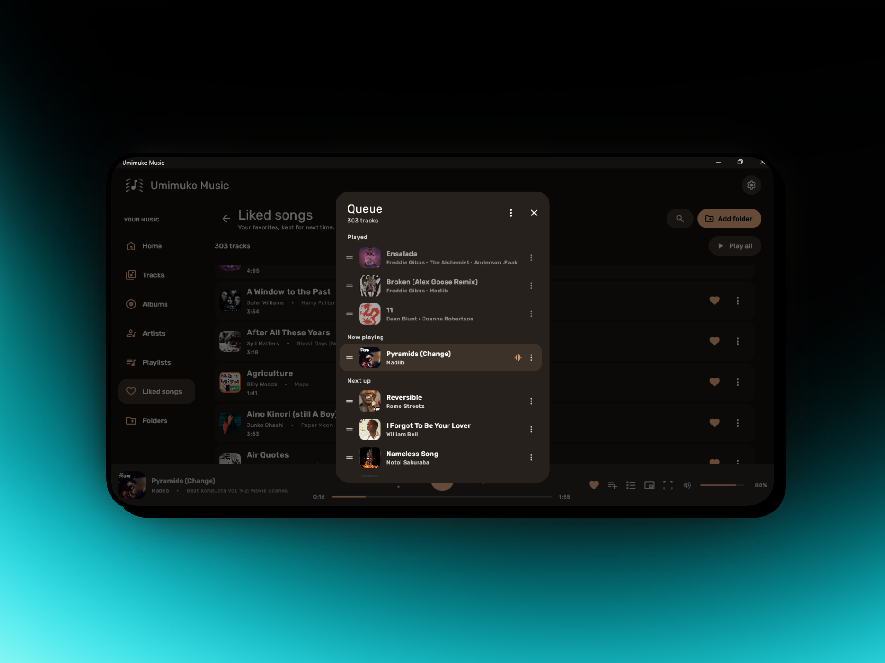

海 向 こ う 創 造
海向こう • 音韻
海向こう Umimukō Music
🌊A clean, offline-first music player for Windows, Linux and MacOS — no streaming, no accounts, just your music.
#linux#mac#macos#music#music-player#music-player-windows#ubuntu#umimuko-music#windows#windows-10#windows-11
写 真
Application Visuals & Screenshots

home dark
mini player
now playing
queue海